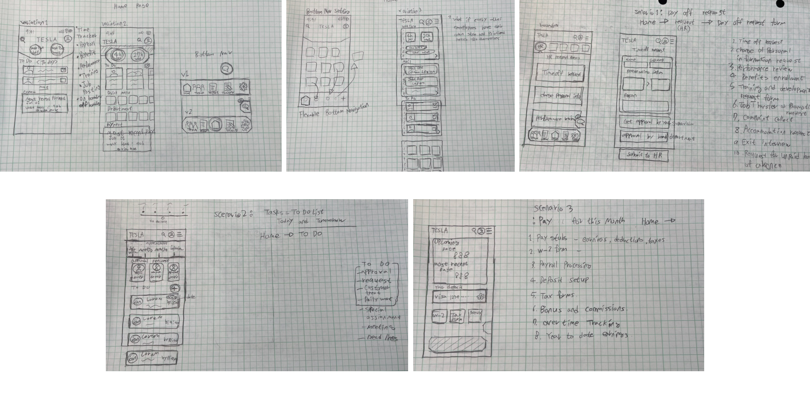

This project is designed to showcase my understanding of design principles and UX research skills. As this app is intended for Tesla employees, it will require an understanding of Tesla's work environment and culture, as well as an understanding of employee satisfaction with current tools.

An ERP system is a software platform that helps organizations automate and streamline their business processes. It integrates different functions such as finance, procurement, and human resources into a single system. This allows businesses to improve efficiency, and collaboration, and gain insights into their operations.
Firstly, the app has a modern and clean design with a simple color scheme and intuitive layout. The interface is generally easy to navigate, and the use of icons and graphics helps to convey information quickly and efficiently.
One area that is lacking in the SAP SuccessFactors app is the ability to track users' work hours. Additionally, in the To-Do List menu, only today's tasks are displayed, but it would be helpful to add features that show yesterday's tasks, tomorrow's tasks, missed tasks, and the importance of tasks. As a good example, I would suggest Canvas, which is widely used by college students. The To-Do list in this app displays the aforementioned features very well. Also, the page that displays team members at a glance is useful, but I found it difficult to find a UI that would allow me to easily contact them.
The feature I liked the most about the Workday app was the page that displayed the HR structure easily understandable with a pyramid structure. This is extremely useful not only for our team but also for understanding the structure of other departments.
The time tracking page of this app has a design that is easy to understand, even for those who are new to the app, and the page for checking wages provides only the necessary information that users need. However, the downside is that other features aside from these useful functions don't have much value for employees to use from their perspective.
Fortunately, a close friend of mine is currently working at Tesla, and I was able to get his opinion on the Tesla internal site for employees. He recently started working at Tesla as a Service Technician. He mentioned that the user experience is very challenging and that in order to find what he is looking for, he had to ask someone who has gone through it before. He also noted that many employees have difficulty using the site.
He showed me The Tesla Life and Tesla Inside pages, and I got the impression that these pages are not yet refined and there is still a lot of room for improvement in terms of user experience and interface.
Through the interview with him, I learned that he uses Kronos for check-in and check-out, Ultipro.com for payment, and Microsoft Teams for communicating with other employees. He also mentioned that he doesn't have a big issue with using various different platforms and systems, but he expressed a very positive view and high expectations for Tesla's own integrated system where everything is in one place.
1. Improved Efficiency: ERP systems integrate all business processes into a single system, eliminating the need for multiple standalone systems. This results in improved operational efficiency and productivity.
2. Enhanced Collaboration: With an ERP system, all employees have access to the same data, making collaboration across departments and teams more seamless and efficient.
3. Better Decision Making: An ERP system provides real-time data and analytics, allowing managers to make informed decisions quickly.
During the brainstorming phase, I listed the necessary contents for Tesla's ERP system and organized them into categories. after this process, I was able to find HR part where I can start with.
1. Use the app to find a day-off request form.
2. Use the app to check your tasks for today and tomorrow.
3. Use the app to check your pay for this month.
During the sketching phase, I had many considerations in mind. I made an effort to incorporate Tesla's innovative and simple style into the design. I created several variations to create a user-centered design that is simple yet encompasses all the necessary features. I believe the most suitable design for Tesla's homepage is version 3, and I proceeded to the next stage with this design.
As I created the wireframes, I was able to solidify the ideas I had during the sketching phase. In this stage, I focused on ensuring that the content was appropriately sized and spaced to fit the layout.
Tesla’s current employee expressed a significant level of satisfaction with the new HR app. As seen on the screen, he was using many different apps while working at Tesla and was experiencing a lot of inconvenience due to this. He believes that an app with various functions based on HR software can make his work experience at Tesla much better.We went through each scenario, and during the process, we discovered icons that did not accurately convey their meaning. We made adjustments to these icons to ensure clarity in communication.
As I was fixing the errors found during user testing feedback and the errors that occurred during the color application process, I entered the final stage. I made sure to thoroughly test each feature and fix any remaining issues before finalizing the app.

After the first draft, I conducted surveys and usability tests with more people to gather more feedback and accurately understand the needs of users.


I conducted a survey to determine if users had experience with ERP systems. The majority of survey participants had experience with an application called Workday. Only 23% of participants responded with a slightly positive reaction, while the rest recalled their experiences as either average or negative. The main reasons for the negative experiences were technical flaws and lack of system management. The positive experiences were attributed to the simplicity and convenience of a few key features. The testers' most anticipated features were payroll management, reporting systems, and request for approval.
The issues I found from the test are as follows:
1. The heatmap showed that many users could not find the button to go to the detailed page.
2. Testers had the most failures in 'Task 2: use the app to check your tasks for today and tomorrow.
3. The font size was too small.
I increased the button size and added descriptions to make it easier for users to navigate to the detailed pages in each section of the homepage.

I believed that the second issue was caused by small font size, an unclear layout, and insufficient descriptions. Therefore, I increased the font size and changed the design to suit the new size. I also changed the title of this section to 'Task' and increased the size of the 'More' button to make it easier for users to navigate to the detailed page of this section.

I increased the font size of all fonts from 10px to 13px and adjusted the size of fonts that were originally 16px to 20px.